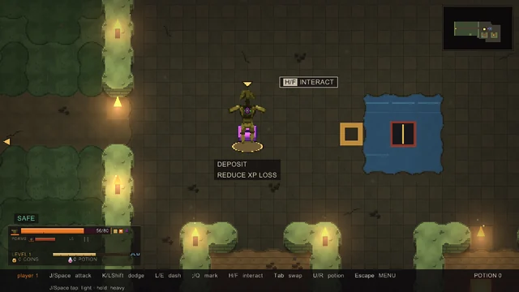

Voz por proximidade
Desenvolvimento em C# de comunicação por voz integrada ao jogo.
Blender, Ruby e C# em projetos com execução e revisão coordenadas por agentes de IA.
Ver os trabalhos
Lógica de jogo e cenários em Ruby e Gosu.
Aplicação: game-two, RPG de ação em desenvolvimento.
Mapa com iluminação e pontos de interação.
Pontos de ação e elementos do cenário.
Barras de estado e feedback visual.
Lógica de jogo e construção de cenários.
Acessórios e cabelo, com atenção à silhueta, à malha e aos materiais.

Bolsa transversal com dois bolsos, fecho metálico e detalhes em azul.

Cabelo em camadas, com franja assimétrica, mechas largas e pontas definidas.

Armação angular, lentes escuras e hastes com detalhes metálicos.

Núcleo grafite cercado por anéis prateados e pequenos satélites azuis.
Bolsa transversal com dois bolsos, fecho metálico e detalhes em azul.
Cabelo em camadas, com franja assimétrica, mechas largas e pontas definidas.
Armação angular, lentes escuras e hastes com detalhes metálicos.
Núcleo grafite cercado por anéis prateados e pequenos satélites azuis.
Seleção de acessórios e cabelo, com validação local em avatar R15.
Ver seleção em PDFDesenvolvimento em C# de sistemas de comunicação e ferramentas de apoio.
Projeto em desenvolvimento.
Desenvolvimento em C# de comunicação por voz integrada ao jogo.
Inspeção de código e engenharia reversa para compreender e revisar integrações de voz.
Lógica, áudio e comunicação entre o jogo e o sistema de voz.